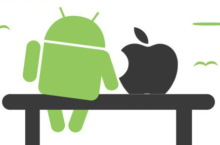

Mobile Development
The Android OS and iOS platforms are my primary focus. Although most of my current projects involve Android, the iOS implementation has been made much simpler thanks to the recent release of Apple, Inc.'s programming language, Swift. Keeping up with the constantly updating versions of iOS and Android OS makes mobile development and maintenance an exciting challenge.

Friends
90's Strategy Games
Growing up during the rein of Lucas Arts strategy games was very exciting. Many of these games, including Day of the Tentacle, Full Throttle, the Monkey Island series and the King's Quest series, are still playable thanks to the ScummVM emulator community. The creator of Day of the Tentacle is currently working on rewriting the game for modern computers and displays.
Day of the Tentacle